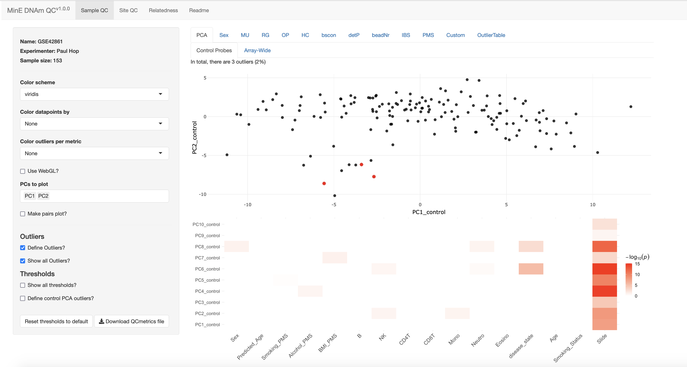

Getting Started
GettingStarted.RmdHere, we show the basic usage of the package. The main workflow of the package can be summarized as follows:

This package consists two main functions (corresponding to the first two steps of the workflow): getQCmetrics() and QCapp():
getQCmetrics(): Create aQCmetricsobject that contains summarized QC metrics, sample and probe outliers, relatedness info and several predicted traits/phenotypes (termed poly-methylation scores (PMS) here). The only input needed is a samplesheet containing the paths of the IDAT-files. Many more optional parameters can be specified (seevignette("AdvancedOptions")), for example: a genotype matrix can be supplied to assess DNAm-genotype concordance. This function will return an object of theQCmetricsclass, which can be explored interactively using theQCapp()method.QCapp(): Visualize aQCmetricsobject (obtained with thegetQCmetrics()function). This function launches a app in which the user can interactively explore the quality control metrics, set thresholds and define sample/probe outliers to be removed in subsequent analyses. In addition, relatedness among samples can be explored and several phenotypes/traits are included (age, sex, cell type fractions, smoking status, alcohol, and BMI). For comparison, otherQCmetricsobjects can be visualized in the background. When appropriate thresholds have been chosen, an updated QCmetrics object can be saved that contains the updated thresholds and outliers.
We intend to share the Project MinE QCmetrics objects (±10,000 samples), that can be used as a reference. Below we put the above in practice using example data.
Load and process example data
First, we’ll process the example data in the minfiData package. Note that this is a very small dataset for example purposes, in the vignette("EWASworkflow") vignette we showcase usage with a larger dataset.
Note that sex information should be coded as ‘M’/‘F’ (NA if missing):
# Processing the data
baseDir <- system.file("extdata", package="minfiData")
samplesheet <- read.metharray.sheet(baseDir)## [1] "/hpc/hers_en/phop/software/R-4.4.0/lib64/R/library/minfiData/extdata/SampleSheet.csv"Create QCmetrics object
The first step is to create a QCmetrics object using the getQCmetrics() function. The main argument of this function is a samplesheet which should contain the following columns:
-
Sample_Name: Unique sample identifier. Should be: Array_Position. -
Basename: Paths to IDAT files -
Sex: Sex of the samples, coded as ‘M’/‘F’, or NA if missing.
Create the QCmetrics object: (note that the function has many more optional arguments, e.g. to include a genotype matrix to assess DNAm-genotype concordance, see vignette("AdvancedOptions")).
## Run getQCmetrics function with default parameters
qcmetrics <- getQCmetrics(samplesheet)
qcmetrics## class: QCmetrics
## array: 450k
## dim: 485512 6This results in an object of class QCmetrics and several common functions can be used to inspect it:
dim(qcmetrics) # Dimensions## [1] 485512 6
nrow(qcmetrics) # Number of probes## [1] 485512
ncol(qcmetrics) # Number of samples## [1] 6
colnames(qcmetrics) # Sample names## [1] "5723646052_R02C02" "5723646052_R04C01" "5723646052_R05C02"
## [4] "5723646053_R04C02" "5723646053_R05C02" "5723646053_R06C02"## [1] "cg00050873" "cg00212031" "cg00213748" "cg00214611" "cg00455876"
## [6] "cg01707559"Show metadata:
metadata(qcmetrics)## Experiment Name: -
## Experimenter: -
## Array: 450k
## Package Version: 1.0.0
## Created at: 2024-07-18Note that the ‘Experiment_Name’ and ‘Experimenter’ fields are empty, these can be set when creating the QCmetrics object:
## Run getQCmetrics function with default parameters
qcmetrics <- getQCmetrics(samplesheet,
name = "minfiData",
experimenter = "Paul Hop")
metadata(qcmetrics)## Experiment Name: minfiData
## Experimenter: Paul Hop
## Array: 450k
## Package Version: 1.0.0
## Created at: 2024-07-18Note that principal components (PCs) are not calculated by default, since this may significantly increase the RAM usage. By setting calculate_PCs = TRUE PCs will be calculated, RAM size can be reduced by limiting PCA to the most variable probes:
## Run getQCmetrics function with default parameters
qcmetrics <- getQCmetrics(samplesheet,
name = "minfiData",
calculate_PCs = TRUE,
n_probes_PCA = 20000,
experimenter = "Paul Hop")Visualize
Now that we’ve created a QCmetrics object, the next step is to visualize it by launching the QCapp:
## Launch app (only works in interactive session)
QCapp(qcmetrics)This will launch the QCapp in your default browser (Chrome is recommended), which will look something like this (note this is a screenshot from the example data shown in vignette("EWASworkflow"):

Within the app users can visualize both samples and probes across several QC metrics, inspect relatedness among the samples and inspect predicted phenotypes (PMS). This package contains a set of default thresholds based on a combination of defaults used in underlying packages (MethylAid, wateRmelon, minfi) and defaults based on our experience with Project MinE data. More details on the QC metrics used and usage of the QC app are provided in section 5. When appropriate thresholds have been chosen, an updated QCmetrics object can be saved that contains the updated thresholds and outliers.
Another QCmetrics object can be supplied to the background parameter, which will then be plotted as background in the relevant plots.
## Launch app (only works in interactive session)
QCapp(qcmetrics, background = qcmetrics2)Extract sample/probe outliers, related samples and PMSs
The main methods to extract samples/probes are:
getSampleOutliers(): Extracts samples that fail QC based on thresholds saved within the QCobjects object*getProbeOutliers(): Extracts probes that fail QC based on thresholds saved within the QCobjects object*getRelatedPairs(): Extracts pairs of samples that appear to be related based on thresholds saved within the QCobjects object*getPMS(): Returns predicted phenotypes for all samples. Phenotypes currently included are: age (three predictors), sex, smoking score, BMI, alcohol, and cell-type fractions.
*these thresholds can be modified within the QC app
Extract sample outliers:
getSampleOutliers(qcmetrics)## # A tibble: 2 × 11
## Sample_Name MU_outlier RG_ratio_outlier GR_ratio_outlier OP_outlier HC_outlier
## <chr> <lgl> <lgl> <lgl> <lgl> <lgl>
## 1 5723646052… FALSE FALSE FALSE FALSE FALSE
## 2 5723646053… FALSE FALSE FALSE FALSE FALSE
## # ℹ 5 more variables: bscon_outlier <lgl>, detectionP_outlier <lgl>,
## # beadNr_outlier <lgl>, sex_outlier <lgl>, Total <lgl>Show an overview of outliers:
getOutlierOverview(qcmetrics)## # A tibble: 10 × 3
## Metric Nr_Outliers Nr_Unique_Outliers
## <chr> <int> <int>
## 1 GR_ratio 0 0
## 2 HC 0 0
## 3 MU 0 0
## 4 OP 0 0
## 5 RG_ratio 0 0
## 6 beadNr 0 0
## 7 bscon 0 0
## 8 detectionP 2 2
## 9 sex 0 0
## 10 Total 2 NAExtract probe outliers:
getProbeOutliers(qcmetrics)## # A tibble: 27,500 × 4
## Probe BeadNr_Percentage detP_Percentage Total
## <chr> <lgl> <lgl> <lgl>
## 1 cg17837162 FALSE TRUE TRUE
## 2 cg18032798 FALSE TRUE TRUE
## 3 cg18077436 FALSE TRUE TRUE
## 4 cg05940236 FALSE TRUE TRUE
## 5 cg06855731 FALSE TRUE TRUE
## 6 cg14778208 FALSE TRUE TRUE
## 7 cg14972466 FALSE TRUE TRUE
## 8 cg15273954 FALSE TRUE TRUE
## 9 cg15662272 FALSE TRUE TRUE
## 10 cg00598664 FALSE TRUE TRUE
## # ℹ 27,490 more rowsExtract related pairs of individuals:
getRelatedPairs(qcmetrics)## Sample_Name.x Sample_Name.y IBS_mean IBS_var
## 1 5723646052_R05C02 5723646052_R02C02 2.0 0.0
## 2 5723646053_R06C02 5723646052_R04C01 1.9 0.1
## 3 5723646053_R05C02 5723646053_R04C02 1.9 0.1Extract predicted phenotypes:
getPMS(qcmetrics)## # A tibble: 6 × 15
## Sample_Name Predicted_Age Predicted_Age_Zhang_en Predicted_Age_Zhang_b…¹
## <chr> <dbl> <dbl> <dbl>
## 1 5723646052_R02C02 69.8 79.1 77.2
## 2 5723646052_R04C01 56.6 76.7 71.0
## 3 5723646052_R05C02 45.5 69.2 87.4
## 4 5723646053_R04C02 54.6 90.2 98.7
## 5 5723646053_R05C02 69.3 89.6 84.0
## 6 5723646053_R06C02 56.4 88.3 98.3
## # ℹ abbreviated name: ¹Predicted_Age_Zhang_blup
## # ℹ 11 more variables: Smoking_PMS <dbl>, Alcohol_PMS <dbl>, BMI_PMS <dbl>,
## # predictedSex <chr>, B <dbl>, NK <dbl>, CD4T <dbl>, CD8T <dbl>, Mono <dbl>,
## # Neutro <dbl>, Eosino <dbl>Save publication-quality plots
Although we recommend interactively exploring the QCmetrics in the QCapp(), you may want to save high-quality figures for publication purposes for example. Although it is possible to save plots within the QCapp() by clicking ‘Download plot as png’ in the toolbar shown in the right upper corner of plots, this doesn’t provide much control for example the size and quality of the figure and is tedious to do for each figure individually. Therefore, we included a savePlots() method, that saves all plots to a specified directory and allows control over quality, size, filetype etc.
Example:
savePlots(qcmetrics,
outdir = "~/test_dir",
name = "minfidata")Fine-tune figure properties and color by Sex:
savePlots(qcmetrics,
outdir = "~/test_dir",
name = "minfidata",
colorby = "Sex",
filetype = "pdf",
point_size = 2,
width = 6,
height = 4)Update QCmetrics file
After samples and probes have been excluded and data is normalized, you may want to update the QCmetrics file with PCs/PMSs based on the cleaned/normalized data.
The updateQCmetrics() method does just that, below an example where samples/probes are excluded based on the QCmetrics file, normalized using minfi::preprocessFunnorm() (see vignette("EWASworkflow") )
## Example cleaned/normalized qcmetrics file
qcmetrics <- getQCmetrics(samplesheet)
rgset <- read.metharray(samplesheet$Basename, extended=TRUE)
# Normalize using functional normalization
rgset_normalized <- preprocessFunnorm(rgset[,!colnames(rgset) %in% getSampleOutliers(qcmetrics)$Sample_Name], nPCs = 3)
# get beta-values
beta_normalized <- getBeta(rgset_normalized)
# Remove failed probes
beta_normalized <- beta_normalized[!rownames(beta_normalized) %in% getProbeOutliers(qcmetrics)$Probe, ]
# Update qcmetrics based on normalized betas
qcmetrics_updated <- updateQCmetrics(qcmetrics = qcmetrics,
samplesheet = samplesheet,
beta = beta_normalized,
calculate_PCs = TRUE)
qcmetrics_updated## class: QCmetrics
## array: 450k
## dim: 458012 4Note that the updateQCmetrics() method can also read in the betas in chunks from a txt-file to reduce RAM usage:
# For this example, save the normalized betas to a txt-file
readr::write_tsv(as.data.frame(cbind(Probe = rownames(beta_normalized), beta_normalized)), sprintf("%s/beta_normalized.txt", tempdir))
qcmetrics_updated <- updateQCmetrics(qcmetrics = qcmetrics,
samplesheet = samplesheet,
beta = sprintf("%s/beta_normalized.txt", tempdir),
read_chunks = TRUE,
chunk_size = 2,
calculate_PCs = TRUE)
dim(qcmetrics_updated)## [1] 458012 4